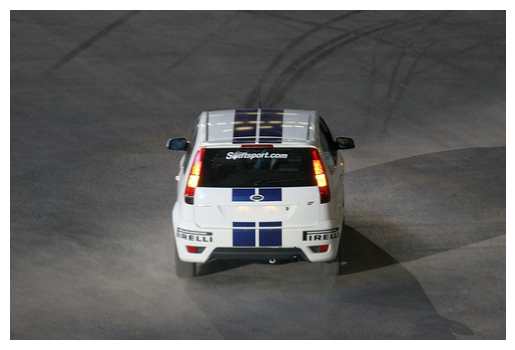
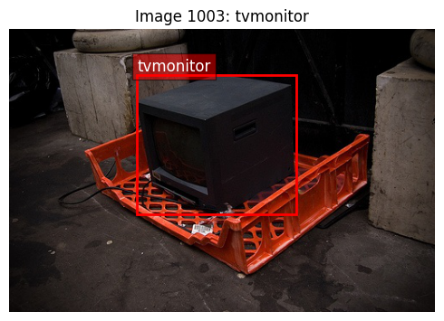
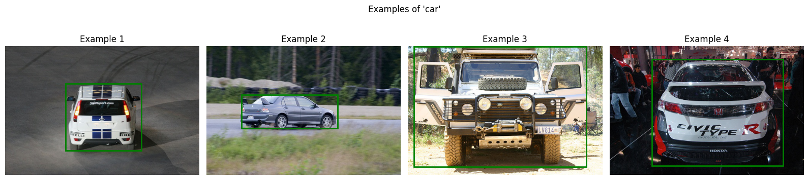
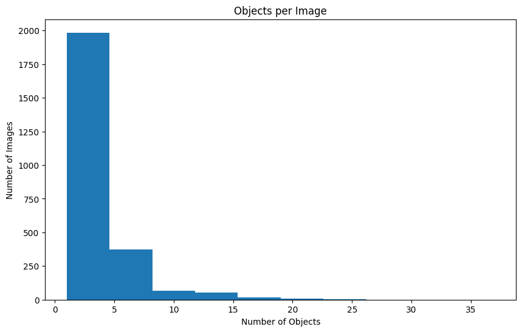
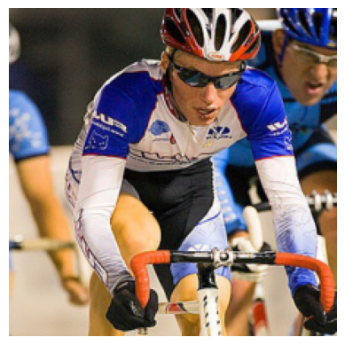
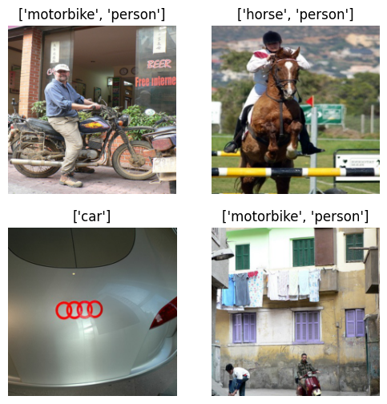
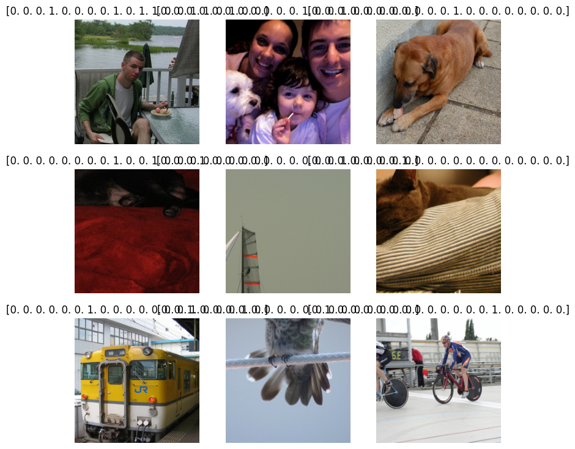
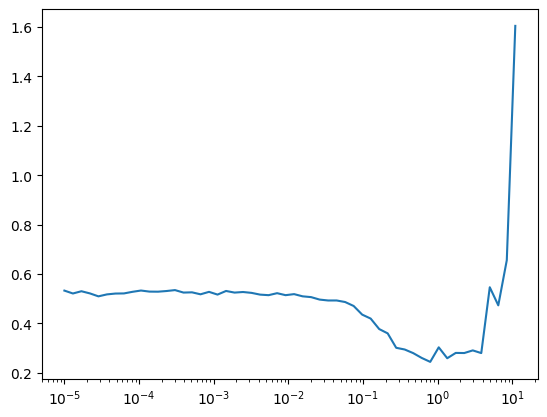

from minai import *
import torch
import torch.nn as nn
from datasets import load_dataset, load_dataset_builder
from torcheval.metrics import MulticlassAccuracy
import torchvision.transforms.v2.functional as TFDarknet Detection
PASCAL VOC2007
import torch
import torch.nn as nn
import torchvision.transforms as transforms
import torchvision.datasets as datasets
from torch.utils.data import DataLoader
import fastcore.all as fc, numpy as np, matplotlib as mpl, matplotlib.pyplot as pltfrom IPython.display import display, Image
from minai import *
import fastcore.all as fc
from fastcore.utils import L
import matplotlib.pyplot as plt
import pandas as pd
import torch
import torch.nn as nn
from torchvision.transforms import v2from pilus_project.core import *
from pilus_project.darknet import *Data
Data loading
Let’s take a look at VOC2007.
VOC_CLASSES = ['aeroplane', 'bicycle', 'bird', 'boat', 'bottle', 'bus', 'car', 'cat',
'chair', 'cow', 'diningtable', 'dog', 'horse', 'motorbike', 'person',
'pottedplant', 'sheep', 'sofa', 'train', 'tvmonitor']data_path = fc.Path.home()/'data/'
data_path.ls()(#4) [Path('/home/galopy/data/VOCdevkit'),Path('/home/galopy/data/tiny-imagenet-200.zip'),Path('/home/galopy/data/VOCtrainval_06-Nov-2007.tar'),Path('/home/galopy/data/tiny-imagenet-200')]ds = datasets.VOCDetection(root=data_path, year='2007', image_set='train', download=True)
dsUsing downloaded and verified file: /home/galopy/data/VOCtrainval_06-Nov-2007.tar
Extracting /home/galopy/data/VOCtrainval_06-Nov-2007.tar to /home/galopy/dataDataset VOCDetection
Number of datapoints: 2501
Root location: /home/galopy/datads[0](<PIL.Image.Image image mode=RGB size=500x333>,
{'annotation': {'folder': 'VOC2007',
'filename': '000012.jpg',
'source': {'database': 'The VOC2007 Database',
'annotation': 'PASCAL VOC2007',
'image': 'flickr',
'flickrid': '207539885'},
'owner': {'flickrid': 'KevBow', 'name': '?'},
'size': {'width': '500', 'height': '333', 'depth': '3'},
'segmented': '0',
'object': [{'name': 'car',
'pose': 'Rear',
'truncated': '0',
'difficult': '0',
'bndbox': {'xmin': '156', 'ymin': '97', 'xmax': '351', 'ymax': '270'}}]}})show_image(ds[0][0]);
ds[0][1]['annotation']['object'][{'name': 'car',
'pose': 'Rear',
'truncated': '0',
'difficult': '0',
'bndbox': {'xmin': '156', 'ymin': '97', 'xmax': '351', 'ymax': '270'}}]ds[0][1]['annotation']['object'][0]['name']'car'len(ds)2501Checking out data
def show_voc_sample(ds, idx, figsize=(12,10)):
img, target = ds[idx]
objects = target['annotation']['object']
img_array = np.array(img)
fig, ax = plt.subplots(figsize=figsize)
ax.imshow(img_array)
width = int(target['annotation']['size']['width'])
height = int(target['annotation']['size']['height'])
for obj in objects:
bbox = obj['bndbox']
xmin = int(bbox['xmin'])
ymin = int(bbox['ymin'])
xmax = int(bbox['xmax'])
ymax = int(bbox['ymax'])
rect = plt.Rectangle((xmin, ymin), xmax-xmin, ymax-ymin,
fill=False, edgecolor='red', linewidth=2)
ax.add_patch(rect)
ax.text(xmin, ymin-5, obj['name'],
bbox=dict(facecolor='red', alpha=0.5), fontsize=12, color='white')
ax.set_title(f"Image {idx}: {', '.join([obj['name'] for obj in objects])}")
ax.axis('off')
plt.tight_layout()
plt.show()
print(f"Image size: {width}x{height}")
print(f"Number of objects: {len(objects)}")
for i, obj in enumerate(objects):
print(f"Object {i+1}: {obj['name']}, Difficult: {obj['difficult']}, Truncated: {obj['truncated']}")set_seed(42)
import random
random_indices = random.sample(range(len(ds)), 5)
for idx in random_indices:
show_voc_sample(ds, idx, figsize=(5,5))
Image size: 500x333
Number of objects: 1
Object 1: aeroplane, Difficult: 0, Truncated: 0Image size: 332x500
Number of objects: 2
Object 1: person, Difficult: 0, Truncated: 0
Object 2: person, Difficult: 0, Truncated: 0Image size: 500x375
Number of objects: 5
Object 1: person, Difficult: 0, Truncated: 1
Object 2: bottle, Difficult: 0, Truncated: 1
Object 3: bottle, Difficult: 0, Truncated: 1
Object 4: person, Difficult: 0, Truncated: 1
Object 5: person, Difficult: 0, Truncated: 1
Image size: 500x333
Number of objects: 1
Object 1: tvmonitor, Difficult: 0, Truncated: 0Image size: 500x281
Number of objects: 2
Object 1: car, Difficult: 0, Truncated: 0
Object 2: car, Difficult: 0, Truncated: 0def get_class_distribution(ds):
"Get distribution of classes in the dataset"
counts = {}
for i in range(len(ds)):
img, target = ds[i]
for obj in target['annotation']['object']:
cls = obj['name']
counts[cls] = counts.get(cls, 0) + 1
return pd.Series(counts).sort_values(ascending=False)class_dist = get_class_distribution(ds)
plt.figure(figsize=(12, 6))
class_dist.plot(kind='bar')
plt.title('Class Distribution in VOC2007')
plt.ylabel('Count')
plt.xticks(rotation=45)
plt.tight_layout()
def get_image_sizes(ds, n=100):
"Get distribution of image sizes in the dataset"
sizes = []
for i in range(min(n, len(ds))):
img, _ = ds[i]
sizes.append(img.size)
return pd.DataFrame(sizes, columns=['width', 'height'])sizes = get_image_sizes(ds)
plt.figure(figsize=(10, 6))
plt.scatter(sizes['width'], sizes['height'], alpha=0.5)
plt.title('Image Dimensions')
plt.xlabel('Width')
plt.ylabel('Height')
plt.grid(True, alpha=0.3)
def show_class_examples(ds, class_name, n=4):
"Show examples of a specific class"
examples = []
for i in range(len(ds)):
img, target = ds[i]
if any(obj['name'] == class_name for obj in target['annotation']['object']):
examples.append((img, target))
if len(examples) >= n: break
fig, axes = subplots(1, n, figsize=(n*4, 4))
for i, (img, target) in enumerate(examples):
axes[i].imshow(img)
axes[i].set_title(f"Example {i+1}")
axes[i].axis('off')
for obj in target['annotation']['object']:
if obj['name'] == class_name:
bbox = obj['bndbox']
x1, y1 = int(bbox['xmin']), int(bbox['ymin'])
x2, y2 = int(bbox['xmax']), int(bbox['ymax'])
rect = plt.Rectangle((x1, y1), x2-x1, y2-y1,
fill=False, edgecolor='green', linewidth=2)
axes[i].add_patch(rect)
plt.suptitle(f"Examples of '{class_name}'")
plt.tight_layout()
return figshow_class_examples(ds, 'car');
objects_per_image = [len(ds[i][1]['annotation']['object']) for i in range(len(ds))]
plt.figure(figsize=(10, 6))
plt.hist(objects_per_image, bins=10)
plt.title('Objects per Image')
plt.xlabel('Number of Objects')
plt.ylabel('Number of Images')Text(0, 0.5, 'Number of Images')
Dataset
class VOCDataset(Dataset):
def __init__(self, image_dir, transform=None):
self.image_files = list(Path(image_dir).glob('*.nd2'))
self.transform = transform
def __len__(self): return len(self.image_files)
def __getitem__(self, idx):
img_path = self.image_files[idx]
img = get_im(img_path)
label_path = img_path.with_suffix('.csv')
corners = calc_corners(str(label_path))
if self.transform:
img = self.transform(img)
return img, cornersclass VOCDetectionDataset(torch.utils.data.Dataset):
def __init__(self, root='./data', image_set='train', year='2007'):
self.dataset = datasets.VOCDetection(root=root, year=year, image_set=image_set, download=True)
self.transform = transforms.Compose([
transforms.Resize((416, 416)),
transforms.ToTensor(),
transforms.Normalize(mean=[0.485, 0.456, 0.406], std=[0.229, 0.224, 0.225])
])
def __len__(self):
return len(self.dataset)
def __getitem__(self, idx):
img, target = self.dataset[idx]
img = self.transform(img)
# Extract bounding boxes and classes
boxes = []
classes = []
for obj in target['annotation']['object']:
bbox = obj['bndbox']
# Convert to [x1, y1, x2, y2]
box = [
float(bbox['xmin']), float(bbox['ymin']),
float(bbox['xmax']), float(bbox['ymax'])
]
boxes.append(box)
classes.append(VOC_CLASSES.index(obj['name']))
return img, {'boxes': torch.tensor(boxes), 'labels': torch.tensor(classes)}# 1. Create detection model
class YOLODetector(nn.Module):
def __init__(self, num_classes=20, num_anchors=5):
super().__init__()
self.backbone = get_darknet19()
self.num_classes = num_classes
self.num_anchors = num_anchors
# Detection head
self.detector = nn.Sequential(
ConvBlock(1024, 1024),
nn.Conv2d(1024, num_anchors * (5 + num_classes), kernel_size=1)
)
def forward(self, x):
x = self.backbone(x)
return self.detector(x)
def get_boxes(self, output, anchors, conf_threshold=0.5):
# Process network output to get boxes
batch_size, _, grid_size, _ = output.shape
output = output.view(batch_size, self.num_anchors, 5 + self.num_classes, grid_size, grid_size)
output = output.permute(0, 1, 3, 4, 2).contiguous()
# Apply sigmoid to xy, objectness and class scores
output[..., 0:2] = torch.sigmoid(output[..., 0:2]) # xy
output[..., 4:] = torch.sigmoid(output[..., 4:]) # objectness + classes
# Process predictions
boxes = []
for i in range(batch_size):
# Get boxes with objectness > threshold
pred = output[i]
mask = pred[..., 4] > conf_threshold
pred = pred[mask]
if len(pred) == 0:
boxes.append([])
continue
# Convert predictions to boxes [x, y, w, h, obj, class_id, class_prob]
box_pred = pred[..., :5].clone()
class_pred = pred[..., 5:]
# Get class with highest probability
class_scores, class_ids = torch.max(class_pred, dim=1)
box_pred = torch.cat([box_pred, class_ids.float().unsqueeze(1), class_scores.unsqueeze(1)], dim=1)
# Convert to [x1, y1, x2, y2, obj, class_id, class_prob]
boxes.append(box_pred)
return boxes
# 2. Custom dataset for bounding boxes
class VOCDetectionDataset(torch.utils.data.Dataset):
def __init__(self, root='./data', image_set='train', year='2007'):
self.dataset = datasets.VOCDetection(root=root, year=year, image_set=image_set, download=True)
self.transform = transforms.Compose([
transforms.Resize((416, 416)),
transforms.ToTensor(),
transforms.Normalize(mean=[0.485, 0.456, 0.406], std=[0.229, 0.224, 0.225])
])
def __len__(self):
return len(self.dataset)
def __getitem__(self, idx):
img, target = self.dataset[idx]
img = self.transform(img)
# Extract bounding boxes and classes
boxes = []
classes = []
for obj in target['annotation']['object']:
bbox = obj['bndbox']
# Convert to [x1, y1, x2, y2]
box = [
float(bbox['xmin']), float(bbox['ymin']),
float(bbox['xmax']), float(bbox['ymax'])
]
boxes.append(box)
classes.append(VOC_CLASSES.index(obj['name']))
return img, {'boxes': torch.tensor(boxes), 'labels': torch.tensor(classes)}def create_voc_datasets(data_path, train_tfms=None, valid_tfms=None, year='2007'):
"Create training and validation datasets for VOC"
if train_tfms is None:
train_tfms = v2.Compose([
v2.RandomResizedCrop(224),
v2.RandomHorizontalFlip(),
v2.ToImage(),
v2.ToDtype(torch.float32, scale=True),
v2.Normalize(mean=[0.485, 0.456, 0.406], std=[0.229, 0.224, 0.225])
])
if valid_tfms is None:
valid_tfms = v2.Compose([
v2.Resize(256),
v2.CenterCrop(224),
v2.ToImage(),
v2.ToDtype(torch.float32, scale=True),
v2.Normalize(mean=[0.485, 0.456, 0.406], std=[0.229, 0.224, 0.225])
])
train_ds = datasets.VOCDetection(root=data_path, year=year, image_set='train', download=False,
transform=train_tfms)
valid_ds = datasets.VOCDetection(root=data_path, year=year, image_set='val', download=False,
transform=valid_tfms)
return train_ds, valid_ds
def voc_collate_fn(batch):
"Custom collate function for VOC dataset that handles images and targets"
images = []
targets = []
for img, target in batch:
images.append(img)
objects = target['annotation']['object']
label = torch.zeros(len(VOC_CLASSES))
for obj in objects:
class_idx = VOC_CLASSES.index(obj['name'])
label[class_idx] = 1
targets.append(label)
images = torch.stack(images)
targets = torch.stack(targets)
return images, targets
def get_voc_dls(data_path, bs=16, year='2007', num_workers=4):
"Create dataloaders for VOC dataset"
train_ds, valid_ds = create_voc_datasets(data_path, year=year)
train_dl = DataLoader(train_ds, batch_size=bs, shuffle=True,
collate_fn=voc_collate_fn, num_workers=num_workers)
valid_dl = DataLoader(valid_ds, batch_size=bs*2, shuffle=False,
collate_fn=voc_collate_fn, num_workers=num_workers)
return DataLoaders(train_dl, valid_dl)class VOCClassificationDataset(Dataset):
"Dataset for VOC classification (multi-label)"
def __init__(self, voc_ds):
self.voc_ds = voc_ds
def __len__(self):
return len(self.voc_ds)
def __getitem__(self, idx):
img, target = self.voc_ds[idx]
objects = target['annotation']['object']
label = torch.zeros(len(VOC_CLASSES))
for obj in objects:
class_idx = VOC_CLASSES.index(obj['name'])
label[class_idx] = 1
return img, labeldef create_voc_tfm_datasets(data_path, year='2007'):
"Create TfmDataset for VOC"
train_ds_raw = datasets.VOCDetection(root=data_path, year=year, image_set='train', download=False)
valid_ds_raw = datasets.VOCDetection(root=data_path, year=year, image_set='val', download=False)
train_ds = VOCClassificationDataset(train_ds_raw)
valid_ds = VOCClassificationDataset(valid_ds_raw)
train_tfms = v2.Compose([
v2.RandomResizedCrop(224),
v2.RandomHorizontalFlip(),
v2.ToImage(),
v2.ToDtype(torch.float32, scale=True),
v2.Normalize(mean=[0.485, 0.456, 0.406], std=[0.229, 0.224, 0.225])
])
valid_tfms = v2.Compose([
v2.Resize(256),
v2.CenterCrop(224),
v2.ToImage(),
v2.ToDtype(torch.float32, scale=True),
v2.Normalize(mean=[0.485, 0.456, 0.406], std=[0.229, 0.224, 0.225])
])
train_tfm_ds = TfmDataset(train_ds.voc_ds, train_ds.voc_ds, tfm_x=train_tfms)
valid_tfm_ds = TfmDataset(valid_ds.voc_ds, valid_ds.voc_ds, tfm_x=valid_tfms)
return train_tfm_ds, valid_tfm_dsDenormalize image before display
?v2.ToDtypefrom torch import tensor
xmean,xstd = (tensor([0.485, 0.456, 0.406]), tensor([0.229, 0.224, 0.225]))
xmean.shapetorch.Size([3])xmean[:,None,None].shapetorch.Size([3, 1, 1])def denorm(x): return (x*xstd[:,None,None]+xmean[:,None,None]).clip(0,1)def get_voc_dls_minai(data_path, bs=16, year='2007'):
"Create dataloaders using minai's get_dls function"
train_ds, valid_ds = create_voc_tfm_datasets(data_path, year=year)
return get_dls(train_ds, valid_ds, bs=bs, collate_fn=voc_collate_fn)trn_ds, vld_ds = create_voc_tfm_datasets(data_path)
trn_ds[0]((Image([[[-0.7822, -0.7822, -0.7822, ..., -0.6109, -0.5767, -0.5424],
[-0.8335, -0.8164, -0.8164, ..., -0.5424, -0.4911, -0.5767],
[-0.8164, -0.8164, -0.7993, ..., -0.5253, -0.4911, -0.4911],
...,
[-0.5938, -0.6281, -0.6281, ..., -0.9192, -0.8678, -0.7822],
[-0.6281, -0.6109, -0.6109, ..., -0.8507, -0.9363, -0.8507],
[-0.6452, -0.6794, -0.6794, ..., -0.8164, -0.9192, -0.9192]],
[[-0.6527, -0.6527, -0.6527, ..., -0.5651, -0.5301, -0.4776],
[-0.7052, -0.6877, -0.6877, ..., -0.4776, -0.4251, -0.5126],
[-0.7052, -0.7052, -0.6877, ..., -0.4251, -0.3901, -0.4076],
...,
[-0.4776, -0.5126, -0.5126, ..., -0.8102, -0.7577, -0.6702],
[-0.5126, -0.4951, -0.4951, ..., -0.7402, -0.8277, -0.7402],
[-0.5301, -0.5651, -0.5651, ..., -0.7052, -0.8102, -0.8102]],
[[-0.5147, -0.5147, -0.5147, ..., -0.3927, -0.3578, -0.3404],
[-0.5670, -0.5495, -0.5495, ..., -0.3230, -0.2881, -0.3753],
[-0.5670, -0.5670, -0.5495, ..., -0.3230, -0.2881, -0.2707],
...,
[-0.2881, -0.3055, -0.3055, ..., -0.5844, -0.5321, -0.4450],
[-0.2881, -0.2707, -0.2707, ..., -0.5147, -0.6018, -0.5147],
[-0.3055, -0.3404, -0.3404, ..., -0.4798, -0.5844, -0.5844]]], ),
{'annotation': {'folder': 'VOC2007',
'filename': '000012.jpg',
'source': {'database': 'The VOC2007 Database',
'annotation': 'PASCAL VOC2007',
'image': 'flickr',
'flickrid': '207539885'},
'owner': {'flickrid': 'KevBow', 'name': '?'},
'size': {'width': '500', 'height': '333', 'depth': '3'},
'segmented': '0',
'object': [{'name': 'car',
'pose': 'Rear',
'truncated': '0',
'difficult': '0',
'bndbox': {'xmin': '156',
'ymin': '97',
'xmax': '351',
'ymax': '270'}}]}}),
(<PIL.Image.Image image mode=RGB size=500x333>,
{'annotation': {'folder': 'VOC2007',
'filename': '000012.jpg',
'source': {'database': 'The VOC2007 Database',
'annotation': 'PASCAL VOC2007',
'image': 'flickr',
'flickrid': '207539885'},
'owner': {'flickrid': 'KevBow', 'name': '?'},
'size': {'width': '500', 'height': '333', 'depth': '3'},
'segmented': '0',
'object': [{'name': 'car',
'pose': 'Rear',
'truncated': '0',
'difficult': '0',
'bndbox': {'xmin': '156',
'ymin': '97',
'xmax': '351',
'ymax': '270'}}]}}))show_image(denorm(trn_ds[2][0][0]));
DataLoader
dls = get_voc_dls(data_path, bs=16)
dls_minai = get_voc_dls_minai(data_path, bs=16)
xb, yb = next(iter(dls.train))
# xb, yb = next(iter(dls_minai[0]))
print(f"Batch shape: {xb.shape}, Labels shape: {yb.shape}")
print(f"Average labels per image: {yb.sum(dim=1).mean().item():.2f}")
print(f"Most common classes: {[VOC_CLASSES[i] for i in yb.sum(dim=0).argsort(descending=True)[:5]]}")
idxs = torch.randint(0, len(xb), (4,))
show_images(
[TF.to_pil_image(denorm(img)) for img in xb[idxs]],
titles=[[VOC_CLASSES[i] for i in torch.where(lbl == 1)[0]] for lbl in yb[idxs]]
)Batch shape: torch.Size([16, 3, 224, 224]), Labels shape: torch.Size([16, 20])
Average labels per image: 1.69
Most common classes: ['person', 'car', 'horse', 'bird', 'cat']
Training Classification
import torch.nn.functional as Fdef get_classification_model(num_classes=len(VOC_CLASSES)):
"Create a multi-label classification model based on darknet19"
backbone = get_darknet19()
model = nn.Sequential(
backbone,
nn.AdaptiveAvgPool2d(1),
nn.Flatten(),
nn.Linear(1024, 512),
nn.ReLU(inplace=True),
nn.Dropout(0.5),
nn.Linear(512, num_classes)
)
return model
def multi_label_loss(preds, targets):
return F.binary_cross_entropy_with_logits(preds, targets)
model = get_classification_model()
learn = TrainLearner(model, dls, multi_label_loss, lr=1e-3,
cbs=[TrainCB(), DeviceCB(), ProgressCB(), MetricsCB()])learn.summary()
0.00% [0/1 00:00<?]
0.00% [0/157 00:00<?]
Tot params: 20359636; MFLOPS: 970.9| Module | Input | Output | Num params | MFLOPS |
|---|---|---|---|---|
| Sequential | (16, 3, 224, 224) | (16, 1024, 7, 7) | 19824576 | 970.4 |
| AdaptiveAvgPool2d | (16, 1024, 7, 7) | (16, 1024, 1, 1) | 0 | 0.0 |
| Flatten | (16, 1024, 1, 1) | (16, 1024) | 0 | 0.0 |
| Linear | (16, 1024) | (16, 512) | 524800 | 0.5 |
| ReLU | (16, 512) | (16, 512) | 0 | 0.0 |
| Dropout | (16, 512) | (16, 512) | 0 | 0.0 |
| Linear | (16, 512) | (16, 20) | 10260 | 0.0 |
@fc.patch
@fc.delegates(show_images)
def show_image_batch(self:Learner, max_n=9, cbs=None, denorm=None, **kwargs):
self.fit(1, cbs=[SingleBatchCB()]+fc.L(cbs))
xb,yb = to_cpu(self.batch)
feat = fc.nested_attr(self.dls, 'train.dataset.features')
denorm = denorm if denorm else fc.noop
if feat is None: titles = np.array(to_cpu(yb)) # when fitting, yb is in GPU
else:
names = feat['label'].names
titles = [names[i] for i in yb]
show_images(denorm(xb[:max_n]), titles=titles[:max_n], **kwargs)learn.show_image_batch(denorm=denorm)
0.00% [0/1 00:00<?]
0.00% [0/157 00:00<?]

learn.lr_find()
0.00% [0/10 00:00<?]
31.85% [50/157 00:01<00:03 0.280]

model = get_classification_model()
learn = TrainLearner(model, dls, multi_label_loss, lr=1e-2,
cbs=[DeviceCB(), ProgressCB(), MetricsCB()])
learn.fit(3)| loss | epoch | train | time |
|---|---|---|---|
| 0.491 | 0 | train | 00:04 |
| 0.319 | 0 | eval | 00:02 |
| 0.278 | 1 | train | 00:04 |
| 0.249 | 1 | eval | 00:02 |
| 0.254 | 2 | train | 00:04 |
| 0.242 | 2 | eval | 00:02 |